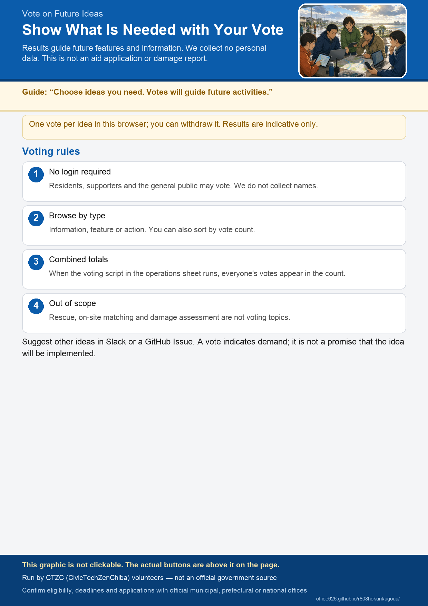

What Would Help After a Disaster? Vote on Ideas
Your votes will help guide future features and new services. We do not collect personal information. Submit applications and damage reports through official service desks.
No ideas are available to display.
How Votes Are Handled
- No login is required. Residents, supporters, and members of the public may vote.
- You may cast one vote per idea in this browser, and you may remove it. We do not collect your name.
- After the voting script for the operations sheet is published, votes from all users will be combined in the displayed totals.
- The results are for reference. They will help us decide what to add to the site and which guidance to prepare first.
- Life-saving operations, on-site matching, and damage assessments themselves are outside the scope of this vote.
Have another idea? Share it on Slack or open a GitHub issue.
